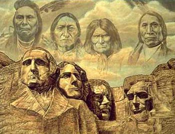
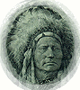
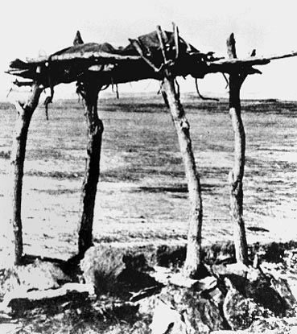

|
The Sioux Indians |
|
“A people without a
history is like wind on a buffalo grass.” |
| It is amazing to
think the Sioux, a hard working tribe on the North American plains once had
as many as 30,000 Native Americans. They occupied most of the North Great
Plains and western prairies mainly in Wisconsin, Iowa, Minnesota, North and
South Dakota and up into the bordering provinces of Canada. The Tetons, with
some 15,000 men, women, and children, were the most populous of the seven
tribes. The Oglala Sioux, the largest group of the Tetons numbered some 3,000.
The Sioux nations had a typical Plains culture involving buffalo hunting
and the sun dance. |
 The Great Indian Chiefs. |
| Actually, the Sioux
were known for bravery, fighting ability and political skills. So, during
the 1800s when white settlers
took over the Sioux’s hunting grounds and killed a lot of buffalo. The Sioux
then rebelled and fled westward. Sixty-five years later this is still going
on. In, Minnesota attacks by the Sioux made counterattacks by the forces
of Henry H. Sibley, after which they were moved to the Dakotas. In the North, the Sioux, Cheyenne, and Arapahoes had forced the army to move the forts of the Bozeman Trail in Red Cloud’s War (1867). When arable lands and rumors of gold in the Dakotas that continued to bring in white settlers into the Sioux’s promised reservation. The government then made a new war in 1876. |
| Sioux Chiefs |
| Two very great Sioux leaders were Sitting
Bull and Crazy Horse. Both did very great deeds for the Sioux nations. Sitting
Bull born in ca. 1834 in the Grand River Valley (Now South Dakota). Sitting
Bull or Tatanka Yotanka, got recognition fro being a warrior and a man of
vision. He joined in on with the usual tribal raids and raids for horses
against enemies such as the Crow and Assiniboin. Many of Sitting Bull’s followers
believed that his magical powers had brought them victory. He was the leader
in the battle of the Little Big Horn. When Custer was killed on June 25,
1876, Sitting Bull and some of his followers fled to Canada. Then returned
in 1881 on a promise of a pardon. In 1890, Sitting Bull was killed by Native
American police for resisting arrest. He was buried in North Dakota but in
1954 his remains were removed to South Dakota. |
 |
|
Native
American chief, Crazy Horse of the Oglala Sioux was a prominent leader in
the Sioux resistance to the encroachment of whites in mineral-rich Black
Hills. When he and his people said “no” to go on a reservation, troops attacked
them at their camp on the Powder River. Although he was victorious in that
battle he also held victory against Gen. George Crook on the Rosebud River.
Crazy Horse ganged up with Sitting Bull and Gall in defeating Custer at the
Little Big Horn. January of 1877, Gen. Nelson A. Miles attacked his
camp and Crazy Horse with his followers spent the remainder of the winter
near starvation. The group numbering about 1,000 surrendered to the Red Cloud
Agency in May. Imprisoned because of a rumor that he was planning a revolt,
Crazy Horse was stabbed to death with a bayonet while attempting to escape.
His bravery and skill were generally acknowledged and the Sioux remember
him as their great leader. |
| Charles Eastman tells about Crazy Horse
in this story. |
| Crazy
Horse |
| Story
of a Brave Sioux Leader |
| “ A very great vision is needed and the
man who has it must follow it as the eagle seeks the deepest blue of he sky…
we preferred hunting to a life of idleness on our reservation. At times we
did not get enough to eat and were not allowed to hunt. All we wanted was
peace and to be left alone. Soldiers came and destroyed our villages. Then
Long Hair (Custer) came… They say we massacred him, but he would have done
the same to us. Our first impulse was to escape but we were so hemmed in
we had to fight.” |
| At Fort Robinson, Nebraska in
1877, Crazy Horse was walking toward the guardhouse, unarmed except for his
knife he always carried. When his cousin ahead of him yelled,” They will
put you in prison!” |
|  Sioux Burial System. |
“Another white man’s trick! Let me die fighting!” cried Crazy Horse. Both of his arms were held tight but that didn’t stop him from trying. While struggling he was killed by a soldier who thrust his bayonet into his back. His old father sang the death song and then carried his body away and buried it somewhere in the Bad Lands. To this day his remains are still resting in its place. |
| During all this war,
the Indians were using bow and arrows, tomahawks, knives, lances, and war
clubs. They used these before they had any access to muskets or other firearms.
A war club was a length of wood with a knob at the end. Tribes across America
differed in how they made it with material, shape, and decoration. Clubs
then developed into tomahawks, a hatchet shaped weapon that was mainly of
stone. Because of its war symbolism, the tomahawk was buried to represent
peace and dug up for war. |
| If
the battle of the Little Big Horn was the beginning of the end, Wounded Knee
was the finale for the Sioux Indians. This was the last engagement in American
history between the Plains Indians and the U.S. Army. Gone was the Indian
dream, pride and spirit. Wounded Knee Massacre started on the banks of the
Wounded Knee about 25 miles west of current day town Martin, South Dakota
on December 29, 1890. |
|
On December 28, the 7th Calvary had arrived at a village led by Big Foot
of the Hunkpapa Sioux and arrested 230 Sioux women and children with only
120 Sioux men. Early next morning Hotchkiss guns were aimed on the Wounded
Knee Valley. More than 500 Calvary Troops under the command of Colonel James
W. Forsyth began disarming every Indian of any gun, knife, axe, stakes, or
and such weapon. |
| No one
knows what caused the disturbance, no one claims the first shot, and it began
with the Hotchkiss guns raining shells into the village at a combined rate
of 200 or more rounds per minute. Them 500 Calvary Troopers were ready and
they started the Wounded Knee Massacre. |
| Almost immediately, most of the Sioux
men were killed although a few mustered enough strength barehanded to kill29
soldiers and wound 39 more. Unarmed Sioux Indian women and children were
Mercilessly Massacred. A few were able to run a couple of miles but were
soon chased down and killed. |
| Of the original 350 Sioux, one estimate
stated that only 50 survived. Almost all historical evidence report over
200 Indians were killed on that day but the government figured 64 men, 44
women and girls, and 18 babies were brutally murdered. All of their bodies
were buried in one communal grave. |
| By the last quarter of the
19th century, most of these Indians were moved to reservations. Encouraged
to abandon their ways of life and become yeomen farmers in regions that would
not sustain agriculture, so they suffered from disease and a declining birthrate.
|
| In 1980, the Supreme
Court of the United States ordered the federal government to pay about $105
million to the Sioux nations for land taken away...illegally |
| Trevor Wehner
Rossville Jr. High 2002 Plains Project Bibliography |